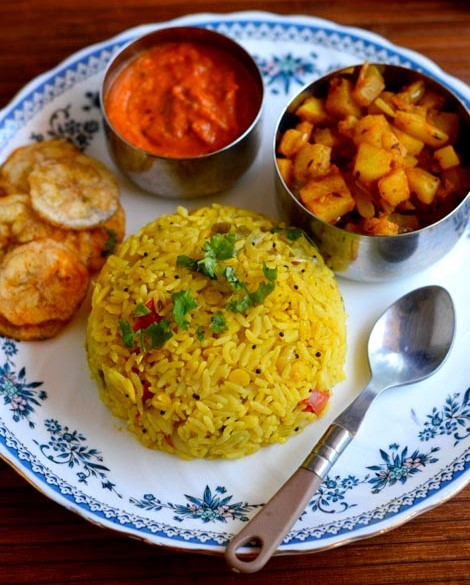

Arisi Paruppu Sadham
Ingredients:
- 1 cup rice
- 1/2 cup toor dal
- 1 onion (sliced)
- 2 tomatoes (chopped)
- 2 green chilies (slit)
- 1 tsp mustard seeds
- 1 tsp cumin seeds
- 2 dried red chilies
- Curry leaves, turmeric, salt
Instructions:
- Soak rice and dal for 20 minutes.
- In a pressure cooker, temper with mustard, cumin, red chilies, curry leaves.
- Add onion, green chilies, and sauté.
- Add tomatoes, turmeric, and cook till soft.
- Add rice, dal, salt and 3 cups water. Pressure cook for 3 whistles.
- Mix well and serve hot with appalam or pickle.
Chef’s Tip:
Use ghee while tempering for extra flavor.

Ambur Mutton Biryani
Ingredients:
- 500g mutton
- 2 cups seeraga samba rice
- 1 cup yogurt
- 2 onions (sliced)
- 2 tomatoes (chopped)
- Whole spices, chili powder, coriander powder, mint, salt
Instructions:
- Marinate mutton with yogurt and spices for 2 hours.
- Sauté onions and tomatoes with whole spices.
- Add marinated mutton and cook till tender.
- Add soaked rice and water. Cook until rice is done.
Chef’s Tip:
Cook on dum for 10 minutes for perfect flavor.
Chettinad Chicken Biryani
Ingredients:
- 500g chicken
- 2 cups seeraga samba rice
- Onion, tomato, ginger garlic paste
- Mint, coriander, curd
- Chettinad masala (dry roast: cinnamon, cloves, fennel, pepper)
Instructions:
- Grind Chettinad masala and keep ready.
- Sauté onion, tomato, ginger garlic paste.
- Add chicken, curd, masala powder, herbs. Cook well.
- Add rice, water and pressure cook for 2 whistles.
Chef’s Tip:
Add a spoon of ghee while serving for aroma.

Dindigul Thalappakatti Biryani
Ingredients:
- 500g mutton or chicken
- 2 cups short-grain rice (Jeera rice)
- Lemon juice, green chilies, ginger-garlic paste
- Freshly ground masala (pepper, clove, cinnamon)
Instructions:
- Grind masala and marinate meat with lemon and spices.
- Sauté green chilies, paste, and meat.
- Add rice and cook with exact water ratio.
Chef’s Tip:
Finish with fried onions and serve with raita.